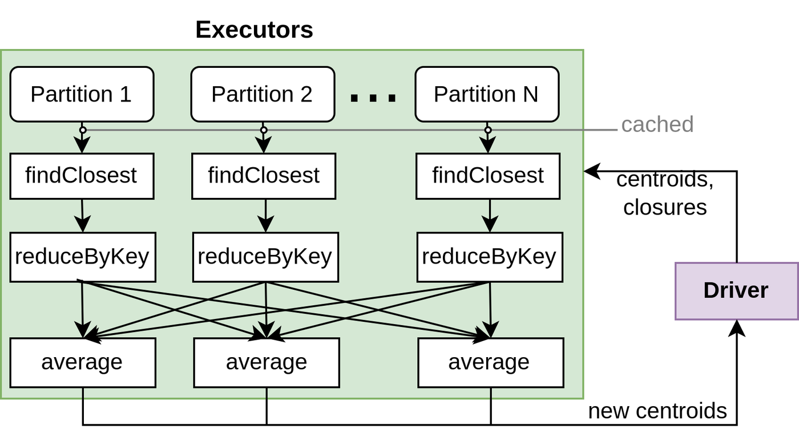

Understanding Spark computational model with logistic regression and clustering
In this blog post I take a close look into the Spark computational model by implementing 2 machine learning algorithms: Logistic Regression and K-Means clustering.
The code is executed in the Databricks environment using Scala. Python is used for visualization.
We can see that data points were split by Spark in 8 partitions:
points.getNumPartitions
res5: Int = 8
Initialize centroids
The first step of k-means clustering is to initialize the first estimates of the centroids. For this example I randomly sample 5 points, but in real applications this initialization step usually involves more sophisticated sampling.
val randomMeans = points.takeSample(withReplacement=false, num=5, seed=10)
# Open the file in read modedef readResults()->list:withopen('means.txt', 'r') asfile: lines =file.readlines()return [tuple(map(float, line.strip('()\n').split(','))) for line in lines]def plot_results(centroids,ax):for i, centroid inenumerate(centroids): samples = data[i*n_samples:(i+1)*n_samples] ax.plot(*centroid, markersize=5, marker="*", color='r', mew=5)first_state = readResults()_,ax = plt.subplots()plot_results(first_state,ax)plot_centroids(centroids,ax)ax.set_title('Initial centroids against true centroids')
Out[5]: Text(0.5, 1.0, 'Initial centroids against true centrids')
Define computational graph
Let’s implement k-means clustering.
The main function update - conceptually performs 2 steps:
Groups the points by the closest centroids
Finds the centre of the groups, effectively obtaining the new estimate for centroids
defeuclideanDistance(v1:(Float,Float), v2:(Float,Float)):Double=(v1._1 - v2._1)*(v1._1 - v2._1)+(v1._2 - v2._2)*(v1._2 - v2._2)/** Return the center that is the closest to `p`*/deffindClosest(p:(Float,Float), centers:Array[(Float,Float)]):(Float,Float)= centers.minBy(euclideanDistance(_,p))defupdateMeans(means:Array[(Float,Float)], points: RDD[(Float,Float)]):Array[(Float,Float)]=return points.map(point =>(findClosest(point,means),point))// pair (closest mean, point).mapValues(point =>(point,1))// add counter for aggregation.reduceByKey({case((p1,cnt1),(p2,cnt2))=>((p1._1 + p2._1,p1._2+p2._2),cnt1+cnt2)})// sum all the points around a centroid .mapValues({case(sum,count)=>(sum._1/count, sum._2/count)})// average aggregated points -> new centroid .map({case(oldMean, newMean)=> newMean}).collect()
Running the algorithm
Let’s run 10 iterations and look at the result.
var means = randomMeansfor(i <-0 to 10){ means =updateMeans(means,points)}
save results for plotting
saveResult(means)
The algorithm successfully found true centroids of clusters.
Plot results (Python)
results = readResults()_,ax = plt.subplots(1,3,figsize=(10,3))plot_results(results,ax[0])plot_centroids(centroids,ax[0])plot_results(results,ax[1])plot_centroids(centroids,ax[2])ax[0].set_title('True centroids and estimations')ax[1].set_title('Estimations')ax[2].set_title('True centroids')
Out[5]: Text(0.5, 1.0, 'True centroids')
Execution analysis
First, Spark builds a graph of computations and only when we call action functions such as .collect() it executes the graph.
Let’s look at the diagram of the execution process.

Spark driver creates closures with centroids and sends them to the executors. Executors apply closures received by the driver to the partitions.
From the spark paper: “..users provide arguments to RDD operations like map by passing closures (function literals). Scala represents each closure as a Java object, and these objects can be serialized and loaded on another node to pass the closure across the network. Scala also saves any variables bound in the closure as fields in the Java object.”
First each partition of points is transformed to the pairs of points and the corresponding closest centroid.
Then we have reduceByKey followed by shuffle and the average. It is conceptually the same as grouping the points by key and taking the average, but computationally more optimal. If we used groupByKey, then the shuffle operation would have to send 10000 points over the network in the worst case. With reduceByKey operation, reduction happens before shuffle occurs, significantly reducing the amount of data to send. In this case for each cluster data points are reduced to a single pair of sum and counts, which means that at most 5 (number of clusters) * 8 (number of partitions) = 40 pairs would need to be sent over the network.
The obtained centroids are then sent back to the driver.
Next iteration driver sends updated centroids back to the executors for recomputation.
Logistic regression
Data
Let’s generate data for binary classification problem
generate data (Python)
import numpy as npimport matplotlib.pyplot as pltfrom sklearn.datasets import make_classificationX, y = make_classification(n_samples=10000, n_features=2, n_informative=2, n_redundant=0, n_clusters_per_class=1, random_state=123)# Plot the datasetplt.figure(figsize=(8, 6))plt.scatter(X[:, 0], X[:, 1], c=y, cmap='viridis', marker='o', edgecolors='k')plt.xlabel('Feature 1')plt.ylabel('Feature 2')
Out[15]: Text(0, 0.5, 'Feature 2')
save data (Python)
import numpy as npdata = np.column_stack((X.astype(str), y.astype(str)))np.savetxt('classification_data.txt', data, fmt='%s')
reading data
import scala.io.SourcecaseclassPoint(coordinates:List[Double], label:Int)defreadData():List[Point]={val filePath ="classification_data.txt"val lines =Source.fromFile(filePath).getLines().toListval points:List[Point]= lines.map { line =>val fields = line.split("\\s+")val x = fields.init.map(_.toDouble).toListval y = fields.last.toIntPoint(x, y)}return points}val points =readData()
Model
For a 2 dimensional problem binary classification model would look like this:
For gradient descent we need to compute gradient at each iteration and update parameters.
Implementation of the gradient \([\frac{dJ}{d{{\beta}}_0}, \frac{dJ}{d{{\beta}}_1}, \frac{dJ}{d{\beta}_2}]\) computation and loss function:
defpartial_derivative(y:Int,pred:Double,x:Double):Double=(pred-y)*x defgradient(xs:List[Double], pred:Double, y:Int):List[Double]={(1.0::xs).map(x =>partial_derivative(y,pred,x))// add 1 to xs to acount for b0}defloss(pred:Double,y:Int):Double={-(y*log(pred)+(1-y)*log(1-pred))}
Define computational graph
Let’s define our computation graph for one iteration of logistic regression. We want to compute gradients for all data points and find their average. For monitoring also let’s compute loss for each iteration as well.
import math.log/* Sum gradients and loss values */defsum(a:(List[Double],Double,Int), b:(List[Double],Double,Int)):(List[Double],Double,Int)={val(grad1,loss1,cnt1)= aval(grad2,loss2,cnt2)= bval grad_sum = grad1.zip(grad2).map({case(g1,g2)=> g1+g2})val loss_sum = loss1+loss2val count = cnt1 + cnt2(grad_sum,loss_sum,count)}/*Compute average for gradients and the loss value*/defaverage(grad_sum:List[Double], loss_sum:Double,counts:Int):(List[Double],Double)={(grad_sum.map(_/counts),loss_sum/counts)}/*Compute gradient and loss value*/defcompute(points:RDD[Point],params:List[Double]):(List[Double],Double,Int)= points.map({casePoint(xs,y)=>(Point(xs,y),model(xs,params))})// get predictions.map({case(Point(xs,y),pred)=>(gradient(xs,pred,y),loss(pred,y),1)})// compute gradient and loss.reduce(sum)
Running the training
Running the training. 10 iterations. Compute average gradient and loss for each iteration and perform gradient descent step
val accuracy = pointsRDD.map(point =>(point.label,model(point.coordinates,parameters))).map({case(y,prediction)=>if((prediction >0.5)==(y==1))1else0}).mean
accuracy = 0.9945
Let’s plot the decision boundary for the obtained model:
save results
import java.io.PrintWriterdefsaveParameters(parameters:List[Double])={newPrintWriter("parameters.txt"){// Iterate through the array and write each element to the file parameters.foreach(println)close()}}saveParameters(parameters)
plot results (Python)
withopen('parameters.txt', 'r') asfile: parameters = [float(line.strip()) for line infile]def get_decision_line(b0,b1,b2): c =-b0/b2 m =-b1/b2returnlambda x: m*x + cxs = np.linspace(-5,5)ys = get_decision_line(*parameters)(xs)plt.figure(figsize=(8, 6))plt.scatter(X[:, 0], X[:, 1], c=y, cmap='viridis', marker='o', edgecolors='k')plt.plot(xs, ys)
Out[17]: [<matplotlib.lines.Line2D at 0x7eff0c05adf0>]
Execution analysis
Logistic regression iteration doesn’t require shuffle operation. We simply apply the sequence of map operations to compute gradients and losses for each point and then do reduce to aggregate. The final step of the iteration happens on the driver. The Driver receives aggregated gradients and losses from the executors, computes the average and performs gradient descent update step. The updated parameters are then sent to the executors for the next iteration.